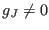
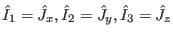
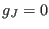
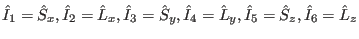
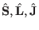
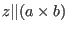
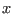
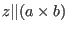
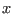
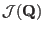

mcdisp - the Calculation Program for Magnetic Excitations
For a given field  and temperature
and temperature  the dynamics of the magnetic system
can be calculated by the program mcdisp, for details
on the theory see appendix M. mcdisp requires as input files
the mcphas.j and single ion input files. In addition, the input file
mcdisp.par and mcdisp.mf are needed
(see description below).
the dynamics of the magnetic system
can be calculated by the program mcdisp, for details
on the theory see appendix M. mcdisp requires as input files
the mcphas.j and single ion input files. In addition, the input file
mcdisp.par and mcdisp.mf are needed
(see description below).
- mcdisp [options]
- [file.mf]]
calculates the dispersion of magnetic excitations
needs as input file a file.mf (default mcdisp.mf)
and mcdisp.par. Creates
files ./results/mcdisp.qom and ./results/mcdisp.qei
containing the dispersion of the magnetic excitations and the neutron
scattering intensity.
Options are:
- Option -max restricts the single ion susceptibility
used to maximum of the n lowest lying transitions, starting
from the ground state (useful to save calculation time).
-
Note that by options -minE and -maxE
also an energy interval may be given (minE,maxE):
Single ion transitions with energies outside this
energy interval are not considered.
- option -d forces mcdisp to do calculation of intensities in dipole approximation only
- Option -r is used to calculate the energy dependence
of the cross section via the direct evaluation of the
dynamical susceptibility for a set of energy values (see appendix M).
If option -r 0.032 is used, the energy dependence of
the scattering cross section is calculated within limits [emin,emax] (given in file
mcdisp.par).
The number, 0.032 in our case, indicates the imaginary part of
in units of meV (see equations
in section M). Setting it zero would lead to numerical
divergencies, choosing it to large leads to large half widths of the calculated
peaks.
Output
is stored in output file mcdisp.dsigma.
Note: option -r will only work correctly if all the single ion modules
which are used conform to the following convention: if , then
,
if  then
 (here
 refer to the
spin-, orbital- and total angular momentum, respectively in a coordinate system where
 ,
 and  perpendicular to and
,
 and  perpendicular to and  ).
).
- To create an output
of the Fourier transform
 use option
-jq (outputs largest eigenvalue of
and
corresponding eigenvector) or option -jqe (outputs all eigenvalues).
If energies are given for hkls in mcdisp.par, output file mcdisp_scaled.jq contains scaled parameters
such that energy of first hkl set corresponds to highest eigenvalue of
.
- -v option is to display more information.
- Option -a can be used to avoid overwriting output files in results, new results
are appended.
- Option -c can be used to create a single ion
transition file ./results/mcdisp.trs, which contains
all single ion transitions used in the calculation. It also contains the
neutron intensities of the non interacting subsystems. This file can
be edited (uncommenting single ion transitions which should not
by used by a # sign at the beginning of the line)
and then the program can be restarted using the
- option -t to
read the single ion transition file ./results/mcdisp.trs and
calculate energies and neutron intensities of dispersive modes.
- Option -ninit n to set the maximum number of low lying
initial states, which will be considered in calculating a single ion susceptibility (not functional
in all single ion modules).
- Option -pinit p to set the minimum thermal population of a
initial state in order to be considered in the singleion ion susceptibility (not functional in
all singleion ion modules).
- Option -prefix 001 to allow for easy parallel processing: all output files results/mcdisp.*
will then be created with prefix 001, i.e. results/001mcdisp.*.
Moreover, in mcdisp.par it is then possible to enter
variables like hklline= with prefix, in our case 001, i.e. 001hklline: this will trigger
the program to read these variables only if started with the option -prefix 001. Another process
maybe started with -prefix 002 and will read variables such as 002hklline and ignore 001hklline.
Variables without prefixes will always be read and used.
After finishing the different processes, the results of the calculations stored e.g. in 001mcdisp.qei and
002mcdisp.qei may be merged by commands like appendfile mcdisp.qei 001mcdisp.qei 002mcdisp.qei.
- Option -ignore_not_posdef_matrix_error ignores error when energies get complex due to unphysical mf groundstate.
- Option -x to calculate resonant inelastic x-ray intensities (maximized with respect to azimuth) instead of neutron intensities.
- Option -xa azstp to calculate resonant inelastic x-ray intensities with complete azimuth dependence for each reflection in steps azstep (deg).
- Option -xaf azimuth to calculate resonant inelastic x-ray intensities for the given azimuth (deg).
- mcdispit [options]
- [file.mf]] same as mcdisp, but no graphic window
Subsections